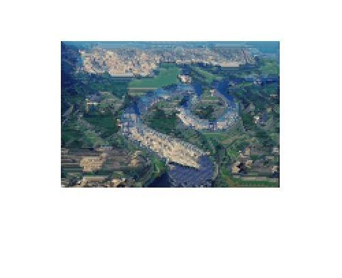
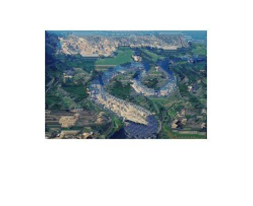

CS129 / Final Project / Image Analogies
Image analogies is a way to transfer image changes. If image A' is image A rendered in a certain way, image analogies makes it possible to apply the change from A to A' to a second image B, and produce the resulting B'. This concept is described in Image analogies (Hertzmann, 2001). Image analogies has many applications. It can reproduce filters, synthesize texture, recreate color, etc. I implemented a simplified version of Hertzmann's studies that achieved some of these features.
Algorithm
The algorithm takes several steps. First, input images A, A', and B are all converted from RGB color space to YIQ color space. This is because humans are more sensitive to luminance than color, and it is also more complex to compute for all 3 colors. Hence, only the Y channel (luminance) of the images is used to create features and be compared.
We build features from the Y channels of A, A', and B. The feature for each point in the images is simply a 5x5 window around the point. Features of B is computed as its elements are created. Since B' is computed in a scan-line order, by the time features for B' are needed, there will only be the neighbors with a lesser row and column number that will be needed. Hence, features of A' and B' only need to be 12 elements as opposed to 25.
B' is generated in a scan-line order. Let's say q is the current pixel locaion in B' that is being generated, and it will eventually be mapped to a point p in A and A'. The features of A and A' are compared with the features of B and B' at point q, and a approximate nearest neighbors (ANN) algorithm is employed to find the closest match between the features of A and B(q). I used this implementation of FLANN (Fast Library for Approximate Nearest Neighbors) to increase efficiency. After a match p is found for B'(q), the value of A'(p) is given to B'(q). Then, depending on the scenario, the chrominance information of either A'(p) or B(q) will be applied to B'(q).
Results
Artistic Filters
From left to right, you will see the source images A, A', and B, and finally the output image B'.
Normal Filters
Recoloring
Generating image from numbers
Texture Synthesis
Super Resolution


 
